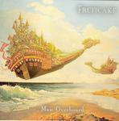

| Artist: | Fruitcake |
| Title: | Man Overboard |
| Label: | Cyclops CYCL 137 |
| Length(s): | 47 minutes |
| Year(s) of release: | 2004 |
| Month of review: | [08/2005] |
| 1) | Intelligence | 5.59 |
| 2) | Backwards Sounds | 7.20 |
| 3) | Lazy Timing | 5.04 |
| 4) | My Nights | 5.41 |
| 5) | Passion Impossible | 4.35 |
| 6) | The Smoking Gun | 6.12 |
| 7) | Once Upon A Naked Floor | 4.01 |
| 8) | Goblin Dinner | 3.32 |
| 9) | I've Taken Nothing | 5.06 |
Backwards Sounds is the next one up and surprisingly, there are elements of King Crimson here. In fact, the music is quite tense, both through the use of more biting guitar, but also the somewhat gloomy and tense keyboard interjections. Plenty of rock on this one too, a bit in the vein of ehm Five Fifteen or so, and I can see where the extension in the line up has helped.The music is much more potent this way.
The rock feel continues on Lazy Timing, where again the keyboards and organ give us the extra the song needs. Notice also the similarities to a specific (older) Camel track. Excellent song, with a good guitar solo to finish it off.
On My Nights the mood is more soft spoken, ballad like, and a bit tragic sounding, and the flute returns. Later on the music becomes more rocky again, a bit bouncy even. Maybe a bit too much on the frolic side. With Passion Impossible we continue the more forceful sound. The chords are rather heavy, the keyboards repetitive and bringing a sense of danger/menace. In between we get some time to breathe, for instance in the slow solo at two thirds gone.
Mystery pervades The Smoking Gun, on which there is a bit too much meandering going on. And where does it all end? Well, in vocals, and a rather merry melody. The lyrics belie the frolic tunes at occur, but there are also passages with a bit of menace inside. A bit of a disjointed affair, thus, but it has its moments.
Once Upon A Naked Floor is a bit of a willowy piece when it opens. The keyboards sound more like Serge Blenner than progrock. The flute then comes in, and adds a rainy day feel. The middle part is typical riff driven progrock (a bit of Saga?), with a bit of a blues feel in the guitar.
Goblin Dinner opens with acoustic guitar and is the shortest track on this album. The electric guitar that comes in next is in the Focus vein: very melodic, mellow even. It is also the only instrumental track.
I've Taken Nothing closes shop, opening with Sovik's vocals, speaking them in a melodic way. The flute takes over then and we run into typical organ riddled progrock in Tull style. Gas is taken back for the vocal parts, making for an alternating tune: proggy and riffy vs. softspoken. The guitar solo is slightly experimental. The finale is a typical one with the volume going up, and the playing strong. The flute has the last words though.